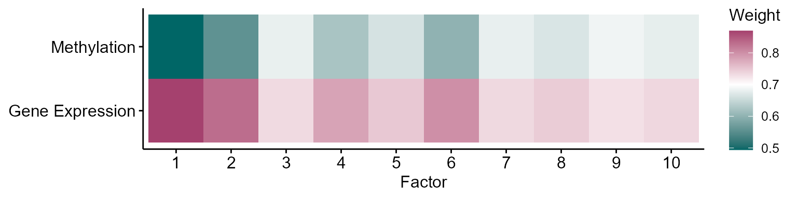
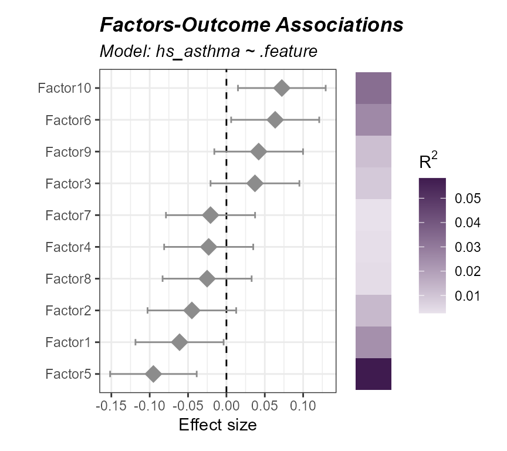
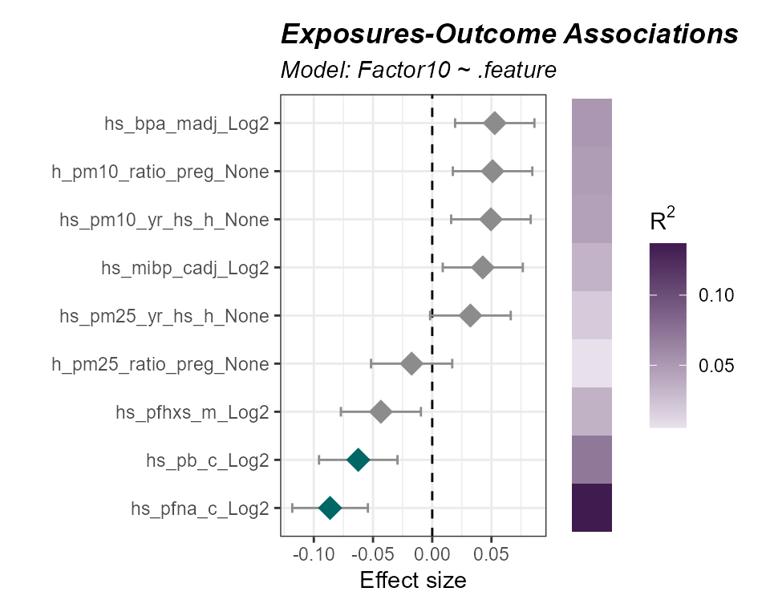
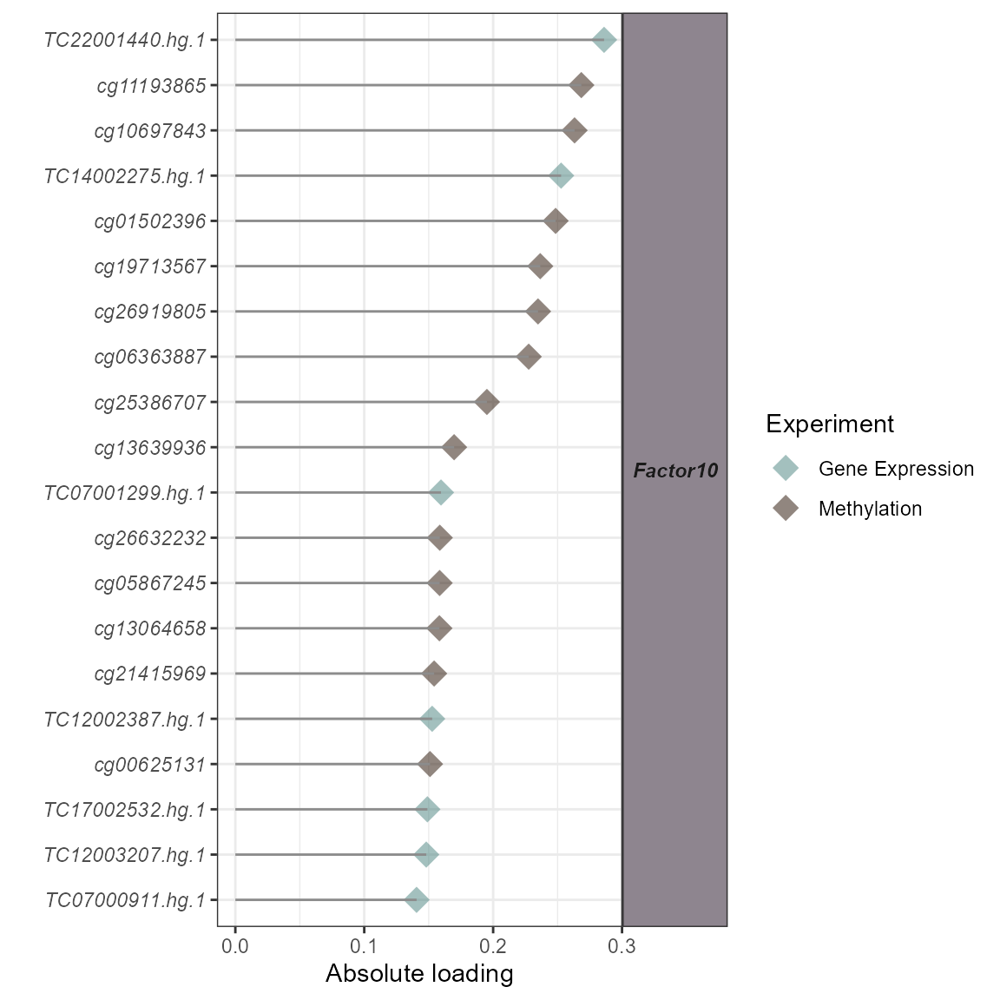

Multi-omics Integration
Jason Laird
Source:vignettes/articles/multi_omics_integration.Rmd
multi_omics_integration.Rmd- Derive latent factors that summarize shared variation across omics layers.
- Assess each omic layer’s contribution to those factors.
- Associate latent factors with an outcome and identify the features driving them.
- Understand when factor-based integration is (and isn’t) the right tool.
Prerequisites
We covered omics/exposure preprocessing in a previous vignette. Here is the quick start code to catch you up to speed!
Click to expand code
# Load Libraries
library(tidyverse)
library(tidyexposomics)
# Load example data
data("tidyexposomics_example")
# Create exposomic set object
expom <- create_exposomicset(
codebook = tidyexposomics_example$annotated_cb,
exposure = tidyexposomics_example$meta,
omics = list(
"Gene Expression" = tidyexposomics_example$exp_filt,
"Methylation" = tidyexposomics_example$methyl_filt
),
row_data = list(
"Gene Expression" = tidyexposomics_example$exp_fdata,
"Methylation" = tidyexposomics_example$methyl_fdata
)
)
# Grab exposure variables
exp_vars <- tidyexposomics_example$annotated_cb |>
filter(category %in% c(
"aerosol",
"main group molecular entity",
"polyatomic entity"
)) |>
pull(variable) |>
as.character()
# Impute missing values
expom <- run_impute_missing(
exposomicset = expom,
exposure_impute_method = "missforest",
exposure_cols = exp_vars
)
# Check variable normality
expom <- run_normality_check(
exposomicset = expom,
action = "add"
)
# Transform variables
expom <- transform_exposure(
exposomicset = expom,
transform_method = "boxcox_best",
exposure_cols = exp_vars
)Multi-omics Integration
Biology is not as simple as one molecular readout. We are composed of
many different types of biomolecules (e.g. DNA, RNA, proteins,
metabolites, etc..) which interact with one another in intricate ways.
This means that there is shared variation between omics layers that may
be useful to capture. These axes of shared variation can be expressed as
latent factors which you can think of as summaries of joint multi-omics
relationships. tidyexposomics provides several ways to get
latent factors, here we will use nipalsMCIA to calculate 10
latent factors:
# setting a random seed, since factor determination can fail
# to converge for smaller toy datasets
set.seed(42)
# run multi-omics integration
expom <- expom |>
run_multiomics_integration(
method = "MCIA",
n_factors = 10,
scale = TRUE
)Now each omic layer may contribute more or less to the variation in that factor, let’s visualize these contributions:
# plot factor summary
expom |>
plot_factor_summary(midpoint = 0.7)
Here we see that most factors are influenced by the gene expression layer, given they tend to have higher weights.Factor-outcome Associations
Each factor is a sample-level summary of our omics layers, meaning we can associate these factors with an outcome. Here we see wh
# run association between factors and asthma status
expom |>
run_association(
formula = hs_asthma ~ .feature,
source = "factors",
feature_set = paste0("Factor",1:10)) |>
plot_association(
source = "factors",
r2_col = "r2",
filter_col = "p.value",
filter_thresh = 0.05)
While none of these associations are significant (quirk of this smaller toy datasets) we do see that factor 10 is associated with an increased odds of asthma. Let’s see which exposures tend to be associated with factor 10:
# run factor-exposure association analysis
expom |>
run_association(
formula = Factor10 ~ .feature,
feature_set = exp_vars,
source = "exposures") |>
plot_association(
source = "exposures",
r2_col = "r2",
filter_col = "p.value",
filter_thresh = 0.1)
Here we note that lead and PFNA exposure are associated with a decrease in Factor 10.
Omics Feature contributions
While we do lose the granular omic-feature-level information when we create these low dimensional factors, we can see which omics features are associated with these factors. This is known as an omics loading value on that factor. Let’s see which omics features contribute most to factor 10:
expom |>
plot_top_factor_features(
factors = "Factor10",
top_n = 20)
Quirks of Multi-omics
So you may be wondering, why not determine latent factors to get the shared biology all the time? In other words, why would you bother doing differential expression/abundance per omic layer? Well for one, the per-layer approach allows you more granular insight into what is changing. Factor analysis will tell you which axes of biology are important, but not necessarily this level of detail. Also watch out for differences the number of features per omic layer. If your gene expresssion matrix has ~20,000 features and your proteomics layer has ~500, then the one with more features will tend to dominate your factors. Still, multi-omics integration techniques can be useful in identifying shared axes of variation, they just need a little more care when interpreting the biology.